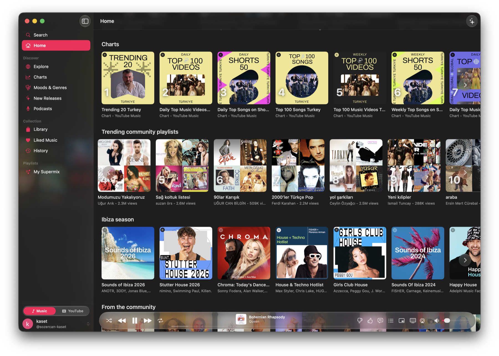

A native YouTube client for macOS
A better YouTube client. Built for Mac.
Browse, watch, listen, download, and clean up YouTube in one native SwiftUI app.
macOS 15.4+
YouTube + YouTube Music
Universal app
46.6 MB ZIP
Built-in addons
Ad Blocker
SponsorBlock
RYD
DeArrow
Built-in YouTube addons. No browser extension setup.
Ad Blocker
SponsorBlock
Return YouTube Dislikes
DeArrow
The YouTube client with more built in
YouTube, with the tools it should have.
KasetPlus combines a native client with practical addons, downloads, lyrics, and private intelligence.
The highlight
A cleaner YouTube experience from the first launch.
Block ads, skip sponsored segments, restore dislikes, and replace clickbait titles without installing browser extensions.
Ad Blocker
SponsorBlock
Return YouTube Dislikes
DeArrow
↓
Download video or audio
Choose quality, estimate size, extract MP3, and include subtitles with bundled yt-dlp.
✦
Apple Intelligence
Understand a video without sending it away.
Generate summaries, key points, and audience notes entirely on-device from video captions. No API key required.
Requires macOS 26 and Apple Intelligence
Lyrics that stay in time
Follow synced lyrics, search LRCLib, and romanize supported non-Latin scripts.
Watch without distraction
Hide comments and related videos when you want the video to be the only thing on screen.
Two sources. One window.
Switch context, not apps.
Move from albums and synced lyrics to subscriptions, Shorts, comments, and full native video controls.
Music

YouTube
Made for macOS
It behaves like a Mac app because it is one.
Swift and SwiftUI throughout, with WebView reserved for DRM playback and authentication.
Media keys and Control Center
Liquid Glass on macOS 26
Background playback
Picture in Picture
System share sheet
Automatic updates
Install in a minute
Download, unzip, move to Applications.
KasetPlus is currently unsigned. macOS will block the first launch so you can review and approve it in Privacy & Security.
Download v0.12.0-kp.7
Support the project
Help keep KasetPlus moving.
If the app earns a place in your Dock, you can support its continued development on Ko-fi.
Support on Ko-fi
Support the foundation
KasetPlus would not exist without Kaset.
This fork is built on @sozercan's work. If you support KasetPlus, please consider supporting the original project too.
Support Kaset on Ko-fi